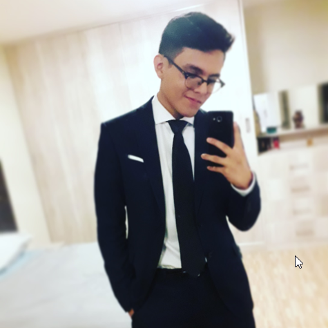
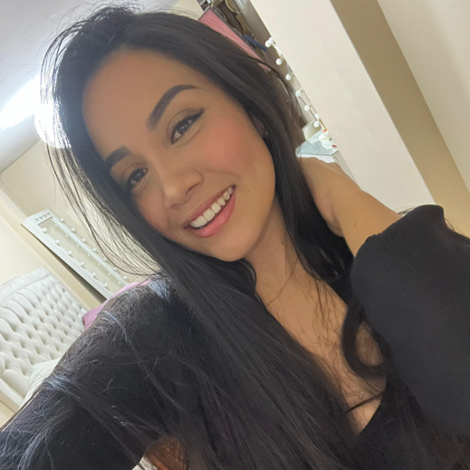
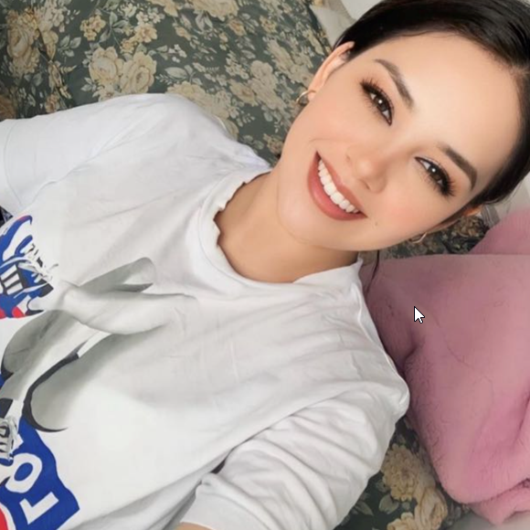
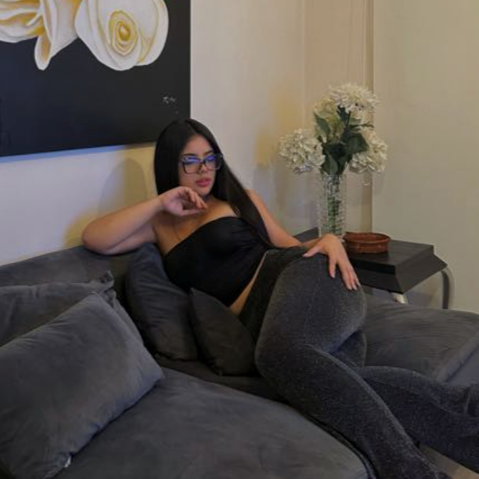
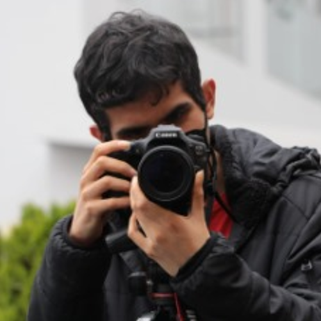
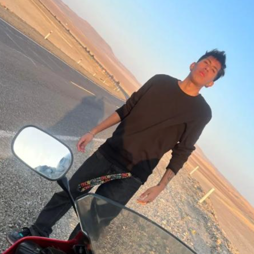

Somos un grupo de jóvenes universitarios de los últimos años de la carrera de Comunicaciones Audiovisuales en Medios Digitales.

Jesús Daniel Fernández Rodríguez

Daniela Tafur Gaona

Yadira Rubi Novoa

Valeria Masiel Huamani

Pedro Paz Plasencia

Jhonny Ccori Mogollon